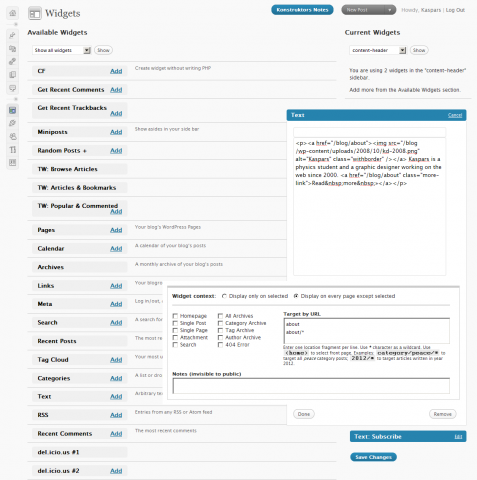

Definitely check out the special episode of WordPress Weekly podcast (RSS) hosted by Jeff Chandler where Matt Mullenweg explains why WordPress, GPL and Open Source matters.
I am finally publishing my Widget Context plugin as an α release at the official plugin repository. If you find a bug, or if you know how to fix that bug where the context settings are not saved for widgets that are added fresh to the sidebar on the first ‘Save’, then please leave a comment.
Widget Context Plugin in Action
Here is what this plugin adds at the end of every widget in the Widget Management area:
{kind=link}

Widget Context in Action
Thank you Kaspars, should this replace Widgets Logic?
Aouni, I think that Widget Context is a bit easier (and faster) to use than Widget Logic, however there might be situations when you needs custom PHP rules.
really useful plugin. Any plans to upload it to the WordPress.org list of plugins?
Not sure if you received my initial bug report but I think widget context does not know the difference between one text widget and another. Based on my testing, for example you can have three different text widgets assigned to three different places but you’ll end up seeing all three in each place.
unique n nice, would love to see it added to wordpress.org as well
Superb plugin but when I activate the plugin all my widgets gone.
combola, yes — this is currently the default behavior of widgets which don’t have the visibility settings applied. Try configuring them under the Widget Management.
Hello — I like your widget but I am having difficulty with specific URLS. I am using WordPress with a static front page called “home”. I am looking to have a different sidebar for my blog vs the other static pages.
When I check the boxes they seem to work fine but when I put in “blog” or “/blog” or “/blog/” nothing happens. I suspect I am using the wrong terminology for the page names. Can you advise?
Thanks!
Michael
Nice plugin Kaspars!
We developed a similar plugin a few months ago. It is available for FREE download here:
http://tomuse.com/wordpress/widget-locationizer
Kaspar:
Wonderful plugin, much needed. I currently setting using wp 2.7 + atahualpa 3.1.7 as a CMS, and your plugin works perfectly. Thanks!
I tried to make this work on our WP 2.7.1 blog but some odd behavior occurred. We have a custom sidebar-top area in our template with a widget installed, and it wouldn’t appear even when configured to do so on every page.
Also, in the made sidebar of the template, we were not able to get any widgets to suppress display (for example, on the homepage) even when the appropriate checkbox was checked. We definitely saved changes and cleared the browser cache when testing this.
Sean, the configuration for displaying widget on every page should be the following — display on every page except selected and with no checkboxes selected. Is it the way you have it currently configured?
Do you use a custom static home page or a default one?
Double-checked the config and it all looks right. We use the default home page, not a custom static.
The problem which Sean had was caused by the plugin checking for variable
$pagedbeing< 1to determine if it is the home page that is currently being viewed. It should have beenif $paged < 2, and it has been fixed now in 0.34.About the wildcard functionality…
Say we use a wildcard of “/category/example/*”
If we have a custom permalink structure of “/%postname%/”, does the wildcard still target category posts made in the “example” category?
Ray, no — it’s not that smart. I will try to implement this functionality in one of the next releases. The only problem is that it will add even more input fields to every widget settings, but I guess it would be worth it.
Thanks for the updates Kaspar!
Hey… I might be going crazy here but when I check “every page except” the results are the exact opposite, ie. the widget is only on that page.
When I check “only on page selected” the widget appears on every other page.
Am I the only one having this problem?
Thanks
Drew, I am using this plugin on this blog and I haven’t experienced anything like that before. Could you please check out the latest version of the plugin and let me know if it fixes the problem.
No, you certainly are not the only one experiencing this problem. I think you have to save those settings twice in a row for them to actually stick.
Jeffro, thanks for inspiration. I finally fixed it. Grab the latest version from the downloads page.
Kaspars, Thanks for your update.
The new update however did not fix my problem. I still have the “Appears on every page accept” box ticked and my widget is ONLY showing up on the blog page.
Am I using the correct language by putting
in the text area and ticking “single page”?
Thanks again.
Drew, it looks there is something missing in the description above. Could you please give a detailed description of what you are trying to achieve and what are the widget context settings you have specified.
I am trying to get a widget to appear only on the static “blog page”
The widget contex setting I am using are as follows:
*Display only on selected
*Single page
In text area I have put: <blog>
It does not work with those settings.
If I then change the first setting to:
*Display on every page except
then it works, which would be fine but I am unable to get a widget to appear on multiple ‘only’ pages using this method.
Thanks
Drew, try deselecting ‘Single Page’ option and make the target URL equal to
blogif your blog’s URL isdomain.com/blogHi, can you please add a feature for this plugin to hide/show a particular widget when a user is logged-in to site and when they are logged-out? This would be extremely useful for membership websites that use WordPress as a backend. Seems like an easy feature to include that would add tremendous value. Let me know. Thanks!
Rob, that is a really good suggestion. I’ll implement that in the next version.
Jeffro2pt0,
I’m getting the same thing. with multiple text widgets, it just shows them all…
J.